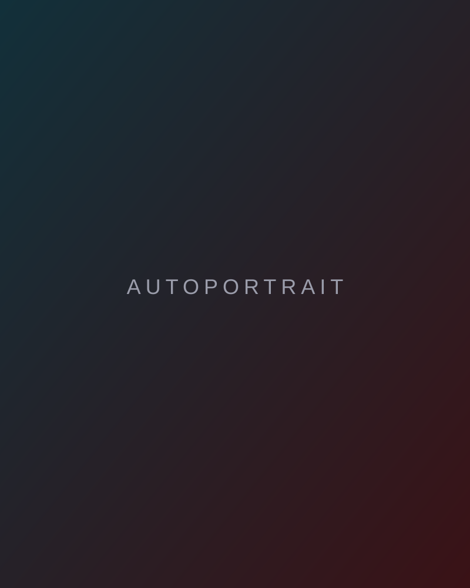

Photographe d'urbex
À propos

À propos
Photographe d'exploration urbaine basé à Toulouse. L'urbex, c'est aller là où l'on n'est pas censé aller : sites fermés, interdits, abandonnés, souvent dangereux. Mines, carrières, centrales thermiques, ouvrages militaires, édifices oubliés.
Je travaille là où l'accès se mérite : progression sur corde, milieu confiné et souterrain, nuit, isolement, autonomie complète. Le risque et l'interdit ne sont pas un décor, ils font partie de la démarche.
Démarche
Je ne documente pas ces lieux, je les mets en scène. Chaque image commence par le lieu : je passe du temps à m'en imprégner avant de photographier (lignes, volumes, matériaux, sources de lumière, échelle). De cette observation naît une composition, et avec elle une ambiance que je vois avant de la fabriquer.
Chaque image est construite comme un plan : ultra grand-angle pour restituer le volume, bracketing pour absorber les écarts de dynamique, lumière artificielle (lightpainting, steelwool, éclairage ciblé) pour sculpter des espaces laissés dans le noir. Rien n'est laissé au hasard : repérage, matériel, accès et cadrage sont planifiés pour que l'image finale corresponde à celle que j'avais imaginée.
Ces lieux ne se donnent pas. Certaines images sont aussi le témoin de ce qu'il a fallu vivre pour y parvenir : la progression, la nuit, l'isolement, l'effort. L'image montre le résultat, mais elle garde la trace du chemin.
Des personnages costumés traversent les séries. Ils donnent l'échelle et servent de fil narratif entre des lieux très différents. Ce que je montre n'est pas le site tel qu'il est, mais ce qu'il devient quand on lui apporte de la lumière et une présence. Je ne cherche pas à imposer une émotion au spectateur : je construis une ambiance, et chacun y met ce qu'il y trouve.
Regard
Je suis Autiste et TDAH. Ce fonctionnement neurodivergent façonne ma façon de photographier : une attention aux structures, aux symétries et aux répétitions géométriques, une capacité à rester sur un lieu jusqu'à ce que la composition soit résolue, et une préparation logistique poussée avant chaque sortie. C'est ce regard, plus qu'une technique, qui distingue mes images.
Fiche technique
- MatérielBoîtiers plein format Sony A7V et Sony A7RII
- OptiquesPrincipalement des ultra grand-angle (10 mm, 14 mm), optique d'architecture à bascule et décentrement (15 mm Shift)
- Prise de vueMulti-exposition / bracketing HDR, pose longue, lightpainting, astrophotographie, autoportrait
- Terrain & accèsProgression sur corde (rappel, remontée), déplacement en milieu confiné / souterrain, autonomie complète en milieu isolé